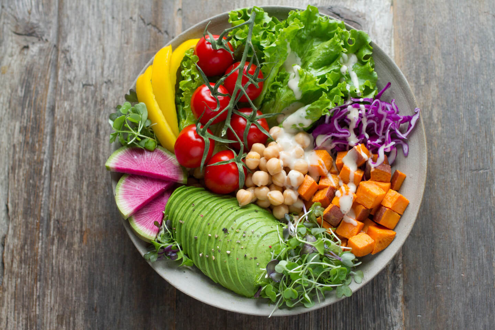

Ensalada de quinoa, kale y granada
Ingredientes
150 g de quinoa cocida
100 g de hojas de kale
50 g de granos de granada
50 g de nueces
Zumo de 1 limón
2 cucharadas de aceite de oliva
Sal y pimienta al gusto
Preparación
1.Lava y masajea las hojas de kale con un poco de zumo de limón y sal.
2.Mezcla la quinoa con kale, granada y nueces.
3.Aliña con el resto del zumo de limón, aceite de oliva, sal y pimienta.
4.Sirve fresca como acompañamiento o plato principal.
Dificultad:fácil
Cocina:saludable
Vegetariana:sí
Anticáncer:alto
Celiacos:sí
